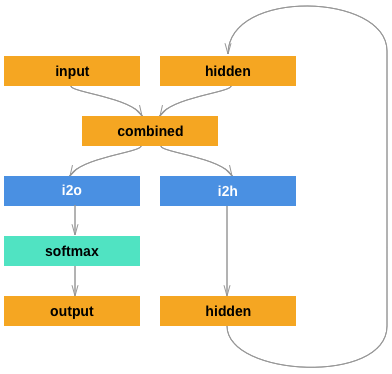

用字符级RNN分类名称
译者：@孙永杰
作者: Sean Robertson
我们将建立和训练一个基本的字符级RNN进行分类单词. 字符级别的RNN将单词读为一系列字符 - 在每个步骤输出一个预测和“隐藏状态”, 将先前的隐藏状态作为下一步的输入. 我们采取最后的预测作为输出,即该单词属于哪一类.
具体来说,我们将用18种语言的几千个姓氏作为训练集并根据拼写预测名称来自哪种语言:
$ python predict.py Hinton
(-0.47) Scottish
(-1.52) English
(-3.57) Irish
$ python predict.py Schmidhuber
(-0.19) German
(-2.48) Czech
(-2.68) Dutch
推荐阅读:
假设你至少已经安装了PyTorch,知道Python和了解张量:
- http://pytorch.org/ 安装步骤
- PyTorch 深度学习: 60 分钟极速入门教程 大体了解PyTorch
- 跟着例子学习 PyTorch 深入概括
- PyTorch for former Torch users 假设你是前Lua Torch用户
了解RNN及其工作方式也很有用:
- 递归神经网络的不合理有效性 展示了一堆真实生活的例子
- 理解LSTM网络 是关于LSTM的具体内容,但也包含有关RNN的一般信息
准备数据
在 data/names 目录中包含18个名为as的文本文件 “[Language].txt” . 每个文件都包含一堆名称,每个名称一行大多是罗马化（但我们仍然需要从Unicode转换为ASCII）.
我们最终会得到每种语言的名称列表字典 {language: [names ...]} 通用变量“类别”和“行” （在我们的例子中用于语言和名称）用于以后的扩展性.
from __future__ import unicode_literals, print_function, division
from io import open
import glob
def findFiles(path): return glob.glob(path)
print(findFiles('data/names/*.txt'))
import unicodedata
import string
all_letters = string.ascii_letters + " .,;'"
n_letters = len(all_letters)
# 将 Unicode 字符串转换为纯 ASCII 编码, 这里感谢 http://stackoverflow.com/a/518232/2809427
def unicodeToAscii(s):
return ''.join(
c for c in unicodedata.normalize('NFD', s)
if unicodedata.category(c) != 'Mn'
and c in all_letters
)
print(unicodeToAscii('Ślusàrski'))
# 构建category_lines字典, 每种语言的名称列表
category_lines = {}
all_categories = []
# 读取一个文件并分成几行
def readLines(filename):
lines = open(filename, encoding='utf-8').read().strip().split('\n')
return [unicodeToAscii(line) for line in lines]
for filename in findFiles('data/names/*.txt'):
category = filename.split('/')[-1].split('.')[0]
all_categories.append(category)
lines = readLines(filename)
category_lines[category] = lines
n_categories = len(all_categories)
现在我们有 category_lines, 这是一个映射每个类别的字典 (语言) 到行列表 (名称). 我们也跟踪 all_categories (只是一个语言列表) 和 n_categories 为以后做参考.
print(category_lines['Italian'][:5])
将名字转化为张量
现在我们已经组织了所有的名字,我们需要将它们变成张量以便使用它们.
为了表示单个字母,我们使用大小为 <1 x n_letters> 的”单热矢量”. 除了当前字母的索引处的1以外,单热矢量剩余填充0, e.g. "b" = <0 1 0 0 0 ...>.
为了说出一个词,我们将其中的一部分加入到二维矩阵中 <line_length x 1 x n_letters>.
额外的1维度是因为PyTorch假定所有内容都是批量的 - 我们在这里只使用1的批量大小.
import torch
# 从all_letters中查找字母索引, e.g. "a" = 0
def letterToIndex(letter):
return all_letters.find(letter)
# 只是为了演示, 把一个字母变成一个 <1 x n_letters> 张量
def letterToTensor(letter):
tensor = torch.zeros(1, n_letters)
tensor[0][letterToIndex(letter)] = 1
return tensor
# 把一行变成一个 <line_length x 1 x n_letters>,
# 或一批单热字符向量
def lineToTensor(line):
tensor = torch.zeros(len(line), 1, n_letters)
for li, letter in enumerate(line):
tensor[li][0][letterToIndex(letter)] = 1
return tensor
print(letterToTensor('J'))
print(lineToTensor('Jones').size())
创建网络
在autograd之前, 在Torch中创建一个循环神经网络涉及到克隆几个步骤一个图层的参数. 图层保持隐藏状态和渐变, 现在完全由图形本身处理. 这意味着您可以以非常“纯粹”的方式实现RNN, 作为常规的前馈层.
这个RNN模块 (大部分都是复制 the PyTorch for Torch users tutorial) 只有2个线性层可以在输入和隐藏状态下运行, 在输出之后有一个LogSoftmax层.

import torch.nn as nn
from torch.autograd import Variable
class RNN(nn.Module):
def __init__(self, input_size, hidden_size, output_size):
super(RNN, self).__init__()
self.hidden_size = hidden_size
self.i2h = nn.Linear(input_size + hidden_size, hidden_size)
self.i2o = nn.Linear(input_size + hidden_size, output_size)
self.softmax = nn.LogSoftmax(dim=1)
def forward(self, input, hidden):
combined = torch.cat((input, hidden), 1)
hidden = self.i2h(combined)
output = self.i2o(combined)
output = self.softmax(output)
return output, hidden
def initHidden(self):
return Variable(torch.zeros(1, self.hidden_size))
n_hidden = 128
rnn = RNN(n_letters, n_hidden, n_categories)
为了运行这个网络的一个步骤, 我们需要传递一个输入 (在我们的例子中是当前字母的张量) 和一个先前的隐藏状态 (我们首先初始化为零) . 我们将返回输出 (每种语言的概率) 和下一个隐藏状态 (我们为下一步保留). 请记住, PyTorch模块对变量进行操作, 而不是直接对张量进行操作.
input = Variable(letterToTensor('A'))
hidden = Variable(torch.zeros(1, n_hidden))
output, next_hidden = rnn(input, hidden)
为了提高效率我们不希望为每一步创建一个新的张量, 所以我们使用 lineToTensor 而不是 letterToTensor 并使用切片. 这可以通过预先计算批次的张量进一步优化.
input = Variable(lineToTensor('Albert'))
hidden = Variable(torch.zeros(1, n_hidden))
output, next_hidden = rnn(input[0], hidden)
print(output)
正如你所看到的输出是一个 <1 x n_categories> 张量, 每个项目都是该类别的可能性 (越高越有可能).
训练
准备训练
在训练之前,我们应该做一些辅助功能. 首先是解释网络的输出, 我们知道这是每个类别的可能性. 我么可以使用 Tensor.topk 得到最大价值的指数:
def categoryFromOutput(output):
top_n, top_i = output.data.topk(1) # Tensor out of Variable with .data
category_i = top_i[0][0]
return all_categories[category_i], category_i
print(categoryFromOutput(output))
我们也希望能够快速获得训练示例 (名称及其语言):
import random
def randomChoice(l):
return l[random.randint(0, len(l) - 1)]
def randomTrainingExample():
category = randomChoice(all_categories)
line = randomChoice(category_lines[category])
category_tensor = Variable(torch.LongTensor([all_categories.index(category)]))
line_tensor = Variable(lineToTensor(line))
return category, line, category_tensor, line_tensor
for i in range(10):
category, line, category_tensor, line_tensor = randomTrainingExample()
print('category =', category, '/ line =', line)
训练网络
现在训练这个网络所需要的就是向大家展示一些例子, 让它猜测, 并告诉它是否是错误的.
对于损失函数 nn.NLLLoss 是适当的, 因为RNN的最后一层是 nn.LogSoftmax.
criterion = nn.NLLLoss()
每个训练循环都会:
- 创建输入和目标张量
- 创建一个归零的初始隐藏状态
- 读入每个字母
- 为下一个字母保持隐藏状态
- 比较最终输出与目标
- 反向传播
- 返回输出和损失
learning_rate = 0.005 # 如果设置得太高, 可能会爆炸. 如果太低, 可能无法学习.
def train(category_tensor, line_tensor):
hidden = rnn.initHidden()
rnn.zero_grad()
for i in range(line_tensor.size()[0]):
output, hidden = rnn(line_tensor[i], hidden)
loss = criterion(output, category_tensor)
loss.backward()
# 将参数梯度添加到它们的值,再乘以学习速率
for p in rnn.parameters():
p.data.add_(-learning_rate, p.grad.data)
return output, loss.data[0]
现在我们只需要运行一些例子. 由于 train 函数返回输出和损失,我们可以打印它的猜测,并记录绘图的损失 既然有1000个例子, 我们只打印每个 print_every 的例子, 并取平均的损失.
import time
import math
n_iters = 100000
print_every = 5000
plot_every = 1000
# 跟踪绘图的损失
current_loss = 0
all_losses = []
def timeSince(since):
now = time.time()
s = now - since
m = math.floor(s / 60)
s -= m * 60
return '%dm %ds' % (m, s)
start = time.time()
for iter in range(1, n_iters + 1):
category, line, category_tensor, line_tensor = randomTrainingExample()
output, loss = train(category_tensor, line_tensor)
current_loss += loss
# 打印循环数,损失,名称和猜测
if iter % print_every == 0:
guess, guess_i = categoryFromOutput(output)
correct = '✓' if guess == category else '✗ (%s)' % category
print('%d %d%% (%s) %.4f %s / %s %s' % (iter, iter / n_iters * 100, timeSince(start), loss, line, guess, correct))
# 将当前损失平均值添加到损失清单
if iter % plot_every == 0:
all_losses.append(current_loss / plot_every)
current_loss = 0
绘制结果
从 all_losses 绘制历史损失显示网络学习:
import matplotlib.pyplot as plt
import matplotlib.ticker as ticker
plt.figure()
plt.plot(all_losses)
评估结果
要查看网络在不同类别中的表现如何, 我们将创建一个混淆矩阵, 为每个实际语言 (行) 指示网络猜测哪种语言 (列). 为了计算混淆矩阵,一堆样本通过网络运行 evaluate(), 这和 train() 减去反向传播是一样的.
# 在混淆矩阵中跟踪正确的猜测
confusion = torch.zeros(n_categories, n_categories)
n_confusion = 10000
# 只要返回给定一行的输出即可
def evaluate(line_tensor):
hidden = rnn.initHidden()
for i in range(line_tensor.size()[0]):
output, hidden = rnn(line_tensor[i], hidden)
return output
# 通过一堆示例并记录哪些是正确的猜测
for i in range(n_confusion):
category, line, category_tensor, line_tensor = randomTrainingExample()
output = evaluate(line_tensor)
guess, guess_i = categoryFromOutput(output)
category_i = all_categories.index(category)
confusion[category_i][guess_i] += 1
# 通过将每一行除以其总和来标准化
for i in range(n_categories):
confusion[i] = confusion[i] / confusion[i].sum()
# 设置绘图
fig = plt.figure()
ax = fig.add_subplot(111)
cax = ax.matshow(confusion.numpy())
fig.colorbar(cax)
# 设置轴
ax.set_xticklabels([''] + all_categories, rotation=90)
ax.set_yticklabels([''] + all_categories)
# Force label at every tick
ax.xaxis.set_major_locator(ticker.MultipleLocator(1))
ax.yaxis.set_major_locator(ticker.MultipleLocator(1))
# sphinx_gallery_thumbnail_number = 2
plt.show()
您可以从主轴上选取显示错误猜测哪些语言的亮点, e.g. Chinese for Korean, and Spanish for Italian. 它似乎与希腊语很好,英语很差 (可能是因为与其他语言重叠).
在用户输入上运行
def predict(input_line, n_predictions=3):
print('\n> %s' % input_line)
output = evaluate(Variable(lineToTensor(input_line)))
# 获取前N个类别
topv, topi = output.data.topk(n_predictions, 1, True)
predictions = []
for i in range(n_predictions):
value = topv[0][i]
category_index = topi[0][i]
print('(%.2f) %s' % (value, all_categories[category_index]))
predictions.append([value, all_categories[category_index]])
predict('Dovesky')
predict('Jackson')
predict('Satoshi')
脚本的最终版本 in the Practical PyTorch repo 将上面的代码分成几个文件:
data.py(加载文件)model.py(定义RNN)train.py(运行训练)predict.py(用命令行参数运行predict())server.py(使用bottle.py将预测用作JSON API)
运行 train.py 来训练和保存网络.
运行具有名称的 predict.py 来查看预测:
$ python predict.py Hazaki
(-0.42) Japanese
(-1.39) Polish
(-3.51) Czech
运行 server.py 和查看 http://localhost:5533/Yourname 获取预测的JSON输出.
练习
- 尝试使用不同的数据集 线条 -> 类别, 例如:
- 任何单词 -> 语言
- 姓 -> 性别
- 角色名字 -> 作家
- 页面标题 -> 博客或subreddit
- 通过更大和/或更好的形状网络获得更好的结果
- 添加更多线性图层
- 试试
nn.LSTM和nn.GRU图层 - 将多个这些RNN组合为更高级别的网络